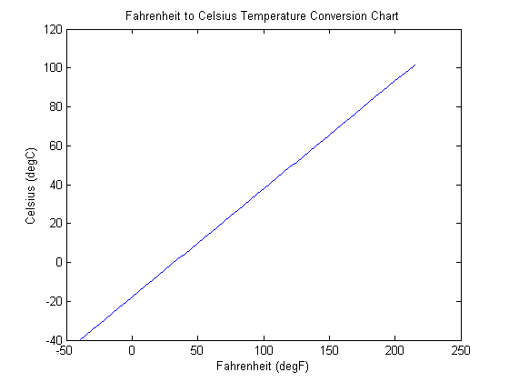

Getting Started
There are just two statements which comprise the operations needed to assign units to variables and convert a unit to an equivalent unit of measure. Units are assigned to variables with a "unit" statement. For example, if the length of an object is 6 feet, then the length "L" is:
L=unit(6,'feet')
L =
1.8288 m
Note that "L" is returned in units of meters. All units are converted to the international system of units (SI) with the "unit" statement. This assures that all arithmetic operations are conducted in the same system of units. To convert the international system of units to another compatible unit of measure, the "convert" statement is used. For example, suppose that we wish to display "L" in yards. Then
convert(L,'yards')
ans =
2 yards
Arithmetic operations can be performed on variables with units without having the variables explicitly converted to the same set of units. Assume that you have a ribbon of material that is 100 yards long, a quarter of an inch wide, and 1 millimeter thick. To find the volume in cubic inches, first assign the length "L", the width "W", and the thickness "T" to variables.
L=unit(100,'yards'); W=unit(1/4,'inches'); T=unit(1,'millimeter');
The volume "V" (in cubic inches) is calculated by the product of "L", "W", and "T".
V=convert(L*W*T,'inch^3')
V =
35.4331 inch^3
Plots can also be made using variables with units attached. The graph below converts temperature in degrees Fahrenheit to temperature in degrees Celsius. The temperature vector "temp" is used as the range for both Celsius and Fahrenheit variables.
temp=unit(-40:5:215,'degF'); Celsius=convert(temp,'degC'); Fahrenheit=convert(temp,'degF');
The figure is made using the "plot" statement. The axis labels are taken from the names of the variables.
plot(Fahrenheit,Celsius)
title('Fahrenheit to Celsius Temperature Conversion Chart')
 Help is also available to locate the permissable names for available units. Suppose that you need a unit for voltage but are unsure of the actual name. The search function is called "unit.search". It can be typed in the command window.
unit.search('voltage')
Units of voltage in volts {'volt','volts','V'}
The strings within the curly braces are the permissable units of voltage. Any of these unit names can be freely interchanged. Sometimes more than one choice will be available. For example, if you look for volt instead of voltage you will get
unit.search('volt')
Units of voltage in volts {'volt','volts','V'}
Units of energy in electron volts {'eV'}
Pick the unit name that is required.